SAGANO BLOG
- >
- SAGANO BLOG
- >
- 学校行事
2023年12月20日
12月20日（火）は2学期終業式でした。
吉村要校長先生
吉村校長先生は卒業生が講話で話された「迷ったらワクワクする方へ」という言葉や、アメリカ26代大統領ルーズベルト氏の「失敗をしない唯一の人は何もしない人だ」という言葉を取り上げ、嵯峨野高生の挑戦する背中をそっと包み込むようなお話をされました。「嵯峨野高生のファン」である校長先生は、成功や失敗に関わらず「2学期のみなさんの努力を讃え、新年がみなさんにとって良い年となることを願っています」とお話を締められました。
続いて、柴田副校長の司会のもと、教育推進部長の森田先生のお話でした。森田先生は自身が進路で「何がしたいのか分からない」と悩んだ過去を赤裸々に語られました。「迷い」「悩む」こと自体を肯定したうえで、次のように続きます。
後になって、どんな時にも人生には意味があったと気付くことがあります。ならば、人生の意味を問い求める必要はない。幸福は追い求めてはならない。幸福は結果に過ぎない。この気づきを「こうあらねばならない」と思い込んでいた、あのときの自分とみなさんに伝えたい。『「何か」があなたを待っている』『「誰か」があなたを待っている』
いつもは理論的な森田先生が心を込めて話された内容は、存在自体を肯定してくれるような内容でした。
二人が共に話されたのは「挑戦」や「努力」の裏にある「不安」や「悩み」に寄り添う言葉。
明日から京都にも寒波が訪れるようですが、なんだか温かい気分になる2学期終業式でした。
「失敗」すらも肯定していく嵯峨野では、自然と結果も出るのでしょうか。
以下、2学期はたくさんの表彰がありました。
| 【英語科】第62回全国高等学校生徒英作文コンテスト：１年honorable mention （入選） |
| 【京・平安文化論ラボ】第３回古典の日文化基金賞未来賞 |
| 【軽音楽部】第11回とよさと軽音楽甲子園：NHK大津放送局長賞 バンド名「ハロー二世帯住宅」 |
| 【剣道部】第１回京都府公立高等学校剣道大会：男子団体の部 準優勝 |
| 【剣道部】令和５年度京都府高等学校剣道新人大会：男子団体の部第５位入賞 全国選抜兼近畿選抜京都府予選会のシード権獲得 |
| 【コンピュータ部】第23回日本情報オリンピック (JOI 2023/2024)：予選敢闘賞受賞 |
| 【コンピュータ部】第4回 全国高等学校AIアスリート選手権大会 シンギュラリティバトルクエスト2023 サイバークエスト二次選考：関西ブロック代表として決勝大会出場 |
| 【コンピュータ部】第3回CyberSakura 予選ラウンド：本戦部門第１位 決勝ラウンドに出場 |
| 【将棋部】第40回京都府高等学校総合文化祭将棋部門：男子Ａ級２位 第32回全国高等学校文化連盟将棋新人大会（1/26～27）に出場 |
| 【将棋部】第40回京都府高等学校総合文化祭将棋部門：男子Ａ級３位 |
| 【将棋部】第40回京都府高等学校総合文化祭将棋部門：男子Ｂ級優勝 |
| 【将棋部】第43回近畿高等学校総合文化祭三重大会将棋部門：男子団体３位 |
| 【卓球部】秋季卓球選手権大会 兼 全国選抜・近畿新人大会府予選：女子団体３位 第38回近畿高校新人卓球大会出場 |
| 【卓球部】秋季卓球選手権大会 兼 全国選抜・近畿新人大会府予選：男子団体ベスト８ 第38回近畿高校新人卓球大会出場 |
| 【卓球部】秋季卓球選手権大会 兼 全国選抜・近畿新人大会府予選：女子ダブルスベスト８ 第38回近畿高校新人卓球大会出場 |
| 【卓球部】秋季卓球選手権大会 兼 全国選抜・近畿新人大会府予選：女子シングルスベスト８ 第38回近畿高校新人卓球大会出場 |
| 【卓球部】第47回公立高等学校卓球大会：女子団体第２位 |
| 【美術部】第40回京都府高等学校総合文化祭：美術・工芸専門部令和６年度 第44回近畿高等学校総合文化祭（福井大会）選出 |
| 【放送部】第40回京都府高等学校総合文化祭放送部門：オーディオメッセージ小部門第1位 令和６年度第48回全国高等学校総合文化祭岐阜大会出場 |
| 【放送部】第40回京都府高等学校総合文化祭放送部門：ビデオメッセージ小部門第1位 令和６年度第48回全国高等学校総合文化祭岐阜大会出場 |
| 【放送部】第40回京都府高等学校総合文化祭放送部門：朗読小部門新人戦第1位 令和６年度第44回近畿高等学校総合文化祭福井大会出場 |
| 【放送部】第40回京都府高等学校総合文化祭放送部門：アナウンス部門第4位 男子第74回、女子第35回全国高等学校駅伝競走大会開会式司会担当 |
| 【放送部】第43回近畿高等学校総合文化祭三重大会放送部門：ビデオメッセージ小部門 優秀賞 |
| 【放送部】右京警察署よりの感謝状：特殊詐欺被害防止啓発のための音声録音への感謝状 |
| 【陸上競技部】第18回京都府国立・公立高等学校陸上競技対校選手権大会：男子砲丸投第３位 |
| 【陸上競技部】第18回京都府国立・公立高等学校陸上競技対校選手権大会：女子800ｍ第３位 |
| 【陸上競技部】第18回京都府国立・公立高等学校陸上競技対校選手権大会：男子800ｍ第３位 |
| 【ワンダーフォーゲル部】令和５年度 第43回 京都府高等学校登山選手権大会：女子団体第１位 |
| 【ワンダーフォーゲル部】令和５年度 第43回 京都府高等学校登山選手権大会：女子団体第２位 |
| 【ワンダーフォーゲル部】令和５年度 第43回 京都府高等学校登山選手権大会：男子団体第２位 |
| 【ワンダーフォーゲル部】令和５年度 第43回 京都府高等学校登山選手権大会：男子団体第３位 |
2023年12月15日
12月14日（木）７限のＬＨＲにおいて、２年生を対象に卒業生講話を行いました。本校の卒業生計６名が、文理別に受験勉強における経験談や、大学生活の様子や学部・学科の魅力など、貴重な生の声を在校生に向けて語ってくれました。
生徒達も、先輩からのメッセージにメモを取りながら真剣に耳を傾けており、まず何に取り組むべきか具体的に自分のやっていくべき事に考えをめぐらすよい機会となりました。
２学期後半になり、様々な進路関係の行事に取り組んでいます。いよいよ受験生への変革に向けて、主体的に学ぶ姿勢を深化させることに期待します。
2023年12月15日
12月14日（木）７限のＬＨＲに、３年生共通テスト受験者対象に説明会を行いました。各ホームルーム教室にて、スライドと担任による説明で受験上の注意事項の確認をしました。共通テストまであと３０日。当日に実力が出せるよう、準備をしっかりとしておきましょう。
2023年12月13日
外務省...。お仕事の想像が難しいので略歴をご紹介させていただきます。

田中 宏明さん
2011年3月 京都府立嵯峨野高校卒業
2015年9月 京都大学法学部卒業
2016年4月 外務省入省
2016年5月 軍縮不拡散・科学部軍備管理軍縮課
（核軍縮に関する取組、オバマ大統領の広島訪問、NPT運用検討会議等の大型行事）
2018年4月 米国研修（デューク大学ロースクール留学）
2020年4月 ポーランド大使館二等書記官
（情報収集・働きかけ、対EU関係、ウクライナ情勢対応、大臣訪問対応）
2022年4月 中・東欧課（ウクライナ情勢対応）
2022年6月 南米課（南米１０カ国所掌、要人の訪問・来日の大型行事、国連総会等の国際会議）
...ますます遠い存在に感じます。田中先輩を前に最初はガチガチのみなさん。


しかし、ここから田中先輩のすごさを教員共々、思い知ることになるのです。
外務省に勤務するためには、語学や国際法等の知識ももちろん大切ですが、田中先輩はその知識を活かすためのコミュニケーション能力の大切さも教えてくださいました。大使館等海外の勤務地で、重要かつ正確な情報をいち早く入手するためには、様々な方との日頃からのコミュニケーションが大切であり、そのために人間関係のメンテナンスを意識的に行っておられるとのこと。

身振り手振りを交えて、熱くお話しいただいた結果、終盤には生徒のみなさんはこの表情！

外務省という難しいお仕事の紹介でしたが、信頼は安心に繋がるようで、笑顔の絶えない講演となりました。後輩へのメッセージとして、以下３つのことを教わりました。
・世界に目をむけよう。
・問題意識を持って、好奇心と情熱を胸に。
・「夢」を諦めないで、迷ったらワクワクする方へ。
講演後、心に火のついた様子の生徒が...

これからも嵯峨野高校は生徒の皆さんを通じて、教育で世界とつながっていきます。『迷ったらワクワクする方へ』飛び立て！嵯峨野高生！！
2023年12月11日
１２月７日（木）、立命館大学大学院スポーツ健康科学研究科博士課程２回生の廣松千愛さんをお招きし、サッカー部と希望者を対象にサイエンスレクチャーを行いました。これまでの研究で明らかになったことや、これからの研究の展望について御講演いただきました。また、質疑応答の時間では、生徒の素朴な疑問から専門的な視点の質問まで、丁寧にお答えいただき、さらに知見が広がりました。
研究内容はもちろん、廣松さんのキャリア形成や、研究に取り組まれる姿勢など、生徒たちにとってたくさんの学びと気づきを得る時間になりました。
なお、今回のサイエンスレクチャーは、RARA（立命館先進研究アカデミー）が主催する「ライスボールセミナー」との共催でした。「ライスボールセミナー」とは、昼休みに若手研究者の研究発表を聴き意見交換する企画です。これまでは主に立命館大学の附属校・提携校を対象に行われており、それ以外の学校へ出向いての実施は今回が初開催となります。


2023年11月24日
１１月１８日（土）に「中学2年生対象説明会」を本校にて開催しました。
当日は、木枯らしが吹く寒い日でしたが1200名を超える中学生とその保護者の方々に参加していただき、誠にありがとうございました。
全体会では、本校の教育内容の説明や生徒による学校生活についてのプレゼンテーションを行い、その後、施設見学や個別相談等を実施しました。


全体会の様子と広報委員


2023年11月21日
11月11日（土）、「令和５年度 みやびサイエンスガーデン」を京都工芸繊維大学にて開催しました。このイベントは、京都府教育委員会と、SSH指定校である京都府立洛北高等学校・嵯峨野高等学校・桃山高等学校が主催となり、自然科学分野を中心とした探究活動に取り組んでいる生徒たちがポスターでの中間報告を行うものです。今年度はスーパーサイエンスネットワーク（SSN）校のうちの南部６校と園部高等学校の計７校から115件のポスター発表、京都府立西舞鶴高校主催の「海の京都サイエンスガーデン」から25件のポスター展示が行われました。また、両イベントはオンラインのGood Job Cardにて質問やコメントを送る交流を行いました。
本校２年生は、これまでのスーパーサイエンスラボ（SSL）Ⅱでの取組の途中経過を報告しました。
【テーマ例】
「フライパンにおけるマイクロプラスチックの発生量の仕組みと変化」
「クリプトビオシス状態のクマムシが復活するスクロース溶液の濃度検討」
「振動に対する構造物の揺動と地中埋設部の深さの相関」
「占い師の行動における人狼ゲームの勝率の変化」
「陶土の種類によるオカリナの音色比較」
「アカマツ(Pinus densiflora Siebold et Zucc.)の根長と土壌物理性の関係」
「熊本県における放置竹林問題～竹林利用に向けた全バイオマス量の推定～」
準備の段階では初めてのポスター発表を不安に感じている生徒もいましたが、当日には、特に質問されたところを丁寧に説明するなど、それぞれ工夫しながら発表を終えることができました。他校の生徒の発表に質問をしたり、研究について議論したりすることで新たな交流の輪を広げた生徒もいました。
今後、頂いた質問やコメントを元に実験を重ね、自身の研究についてより深く、より多角的な視点で語れるようになってほしいです。

{kind=link}
{kind=link}
{kind=link}
{kind=link}
{kind=link}
{kind=link}
{kind=link}
{kind=link}
{kind=link}
{kind=link}
{kind=link}
{kind=link}
{kind=link}
{kind=link}
{kind=link}
{kind=link}
{kind=link}
{kind=link}
{kind=link}
{kind=link}
{kind=link}
{kind=link}
{kind=link}
{kind=link}
{kind=link}
{kind=link}
{kind=link}
{kind=link}
{kind=link}
{kind=link}
{kind=link}
{kind=link}
{kind=link}
{kind=link}
また、今年度は発表者だけでなく、１年生も見学に参加し、嵯峨野高校や他校の先輩の発表を聞き、質問やコメントを行いました。参加した１年生は
「説明をしている人が生き生きとしていて楽しみに思った」
「自分の興味のある分野が以前よりはっきり見えてきた」
「まずは日常でテーマを見つけることをがんばろうと思います」
など、今後の探究活動に向けて期待を膨らませていました。
2023年11月11日
{kind=link}
{kind=link}
{kind=link}
{kind=link}
１１月９日木曜日７時間目、２年生対象の進路ガイダンスⅡを行いました。
分野別の会場に分かれて行いました。分科会によっては大学や専門学校から講師の先生をお招きしてのガイダンスでした。
各会場には、熱心にお話を聞き、これまでの自分を振り返り、それぞれのこれからについて真剣に考える２年生の姿がありました。
本格的に受験生となるこの時期、一日一日を大切に、じっくりと歩んでいきましょう。
2023年10月26日
10月26日 第二学年研修旅行 その12
小樽班別研修です。生徒たちは班ごとに自由に活動しています。
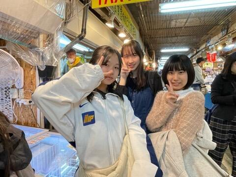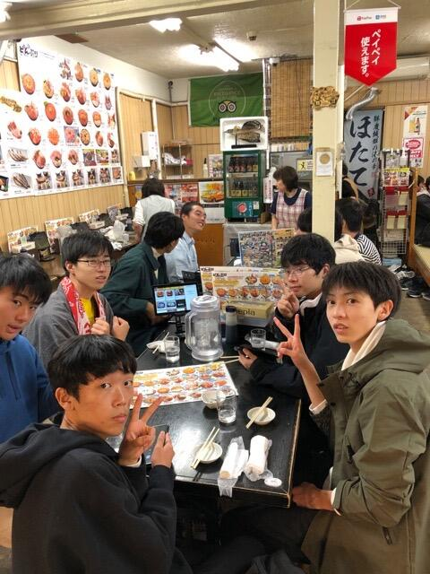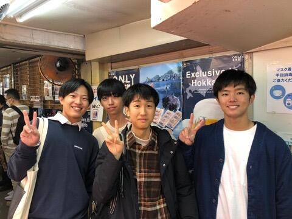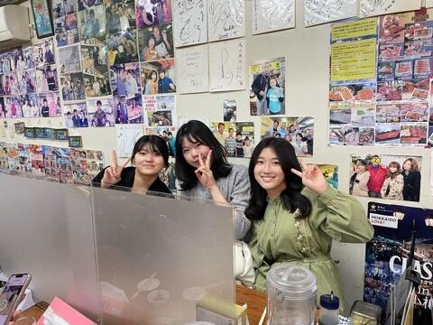
お土産を買ったり、昼食にお寿司を食べたり、運河を散策したり、オルゴール館を見学したりと、小樽を満喫していました。
地元の名物に舌鼓を打つのも、文化を感じるのに必要なことですね。
2023年10月26日
10月26日 第二学年研修旅行その11
今日は、研修旅行最終日です。今朝の札幌は霧ですが、霧が晴れれば快晴の予報です。
これから小樽で班別研修をします。班別で市内観光をして、昼食を取ります。また、写真コンテスト用の風景写真も撮影する予定です。
そのあと、新千歳空港まで移動し、帰京する予定です。
2023年10月25日
10月25日 第二学年研修旅行その10
3日目夜には、研修旅行委員で準備してきた学年レクを行いました。
バースデーチェーンで誕生日順に並んだあと、伝言ゲームを行いました。伝言内容は先生の秘密・・・生徒たちは笑いつつも必死に伝言していました。いつに間にか秘密が混ざり合い、最後にはとんでもない秘密になっていました？
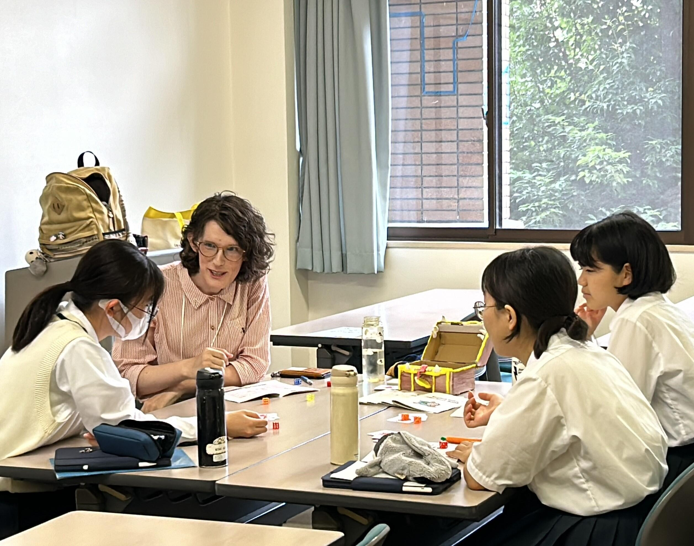
その後、北海道に関するクイズを行いました。間違え＝即脱落の厳しいルールで、正解が発表されると喜びと悔しさの悲鳴が上がりました。最終問題で全員間違える、絶妙な難易度設定ででした。
爆笑オープニングアクト、ダンス発表の有志企画もあり、最後は全員で踊って盛り上がりました。
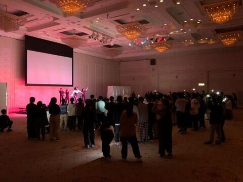
2023年10月25日
10月25日 第二学年 研修旅行その9
植松電機様のロケット体験プログラムに参加しました。今年度初めての取り組みで、研修旅行で１番楽しみにしている生徒もいました。
午前は、植松努氏の講演と簡易ロケットの作成を行いました。
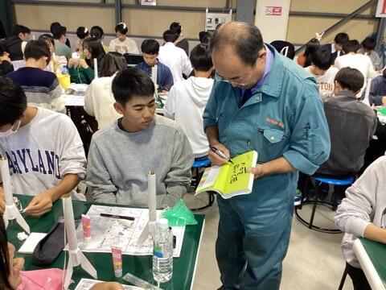
植松氏が宇宙開発にかける思いと子供達に伝えたいメッセージを熱く語っていただきました。
生徒たちはしっかりと話を聞き、宇宙開発にも思いを馳せている様子でした。
簡易ロケット作成は、ロケット作成キットを使用しました。周囲の人と相談しながら作成し、思い思いの色付けもしました。
昼食後、午後からは、CAMUIロケットエンジンの燃焼実験を見学しました。燃焼の瞬間の爆音に驚きましたが、本物に触れることができました。
さらに、午前に作成したロケットに固体燃料ユニットを装着してロケットの打ち上げを体験をしました。手作りのものですが、最大数10mの高さに達し、上空でパラシュートが開き、本体をキャッチできる生徒もいました。
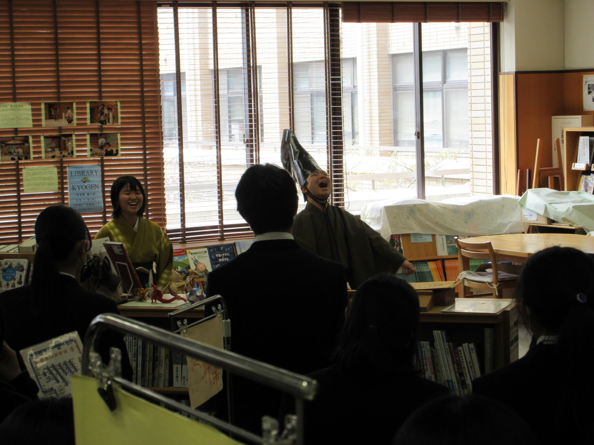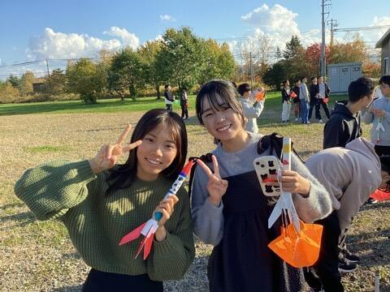
植松氏の講話とロケット体験プログラム、どちらも学びにつながったことと思います。とても有意義な経験になりました。
2023年10月25日
10月25日 第二学年 研修旅行その8 本日の予定
今朝も良い天候が続いています。
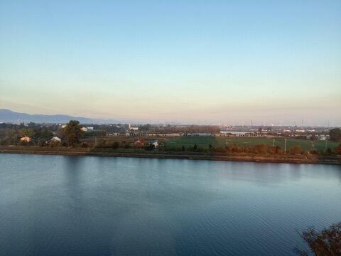
本日はロケット開発もされている植松電機で、社長講話、ロケットエンジンの燃焼実験見学、ミニロケットの作成を行います。
個人の旅行ではなかなかできない、研修旅行ならではの内容です。
実りあるものになるよう、しっかり学んできたいと思います。
2023年10月24日
10月24日 第二学年 研修旅行その7
2日目の午後は、札幌での自由研修と藻岩山の夕景・夜景です。
札幌ではラーメンを食べる班、スウィーツを食べる班、札幌の見どころを見学する班などがありました。短い時間でしたが、楽しんでいる様子でした。
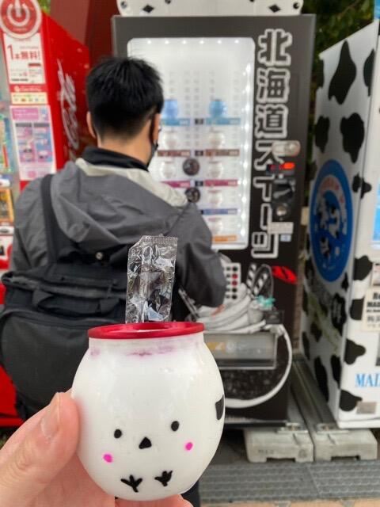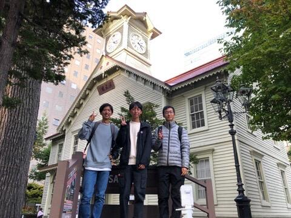
テレビ塔での記念写真もとりました。
日が落ちるとぐっと気温も下がり、風が強かったこともあって一気に寒くなりましたが、藻岩山の夕景、夜景は非常にきれいでした。
その後、今夜のホテルに移動しました。これから食事、その後は各自リラックスの時間です。
順調に日程が進んでいます。
2023年10月24日
10月24日 第二学年 研修旅行その6
自然体験アクティビティとクラフト体験の様子です。天候に非常に恵まれました！
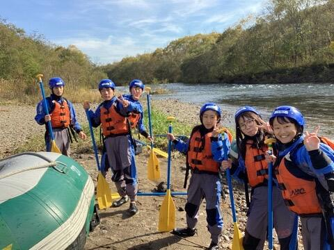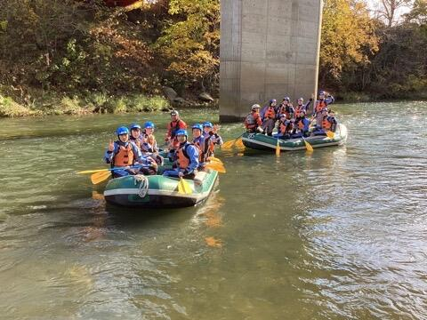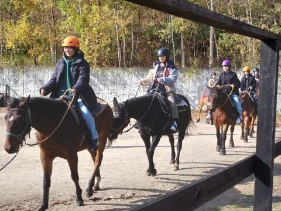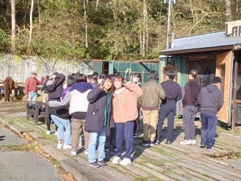
朝は寒かったですが、昼前にはとても暖かかくなりました。どの体験も楽しく、北海道の雄大さを感じました。
これからルスツから札幌に向けて移動します。
札幌では、クラス写真の撮影と市内での自由研修後、藻岩山へ移動して夕景・夜景を見に行きます。
2023年10月24日
10月24日 第二学年 研修旅行5
今朝は冷え込んでいます。朝は氷点下まで冷え込んでいました。
朝食をしっかり食べて、アクティビティに向かいます。


ラフティング、リバーカヌー、マウンテンバイク、乗馬、レザーワーク、生キャラメル&アイス作り体験から1つ選んで体験します。
天候には非常に恵まれました。

大自然を満喫してきます。
2023年10月23日
10月23日 第二学年 研修旅行その4 夕食の様子
ホテルでの食事を終えました。おいしいご飯で、生徒も大喜びでした。


明日は、ルスツでの自然体験やクラフト体験があります。
夜は冷えるので暖かくして就寝です。
体調不良者はなく、全員元気に過ごしています。
2023年10月23日
10月23日 2年生研修旅行その3
クラス別研修の様子です。


どの生徒も笑顔で過ごせました。
北海道の大きさや自然を感じたクラスもあれば、新しい施設や甘いお菓子に舌鼓･･･といったクラスもありました。
この後は、ホテルで食事です。
2023年10月23日
10月23日 新千歳空港
全団無事に北海道に到着しました。北海道はよく晴れていますが、少し肌寒いです。


このあとは、クラス別研修を経て、ルスツのホテルを目指します。各クラスの行き先は・・・
1組 白い恋人パーク
2組 登別地獄谷
3組 鮭のふるさと千歳水族館
4組 ハイジ牧場
5組 ＡＯＡＯ Ｓａｐｐｏｒｏ
6組 北海道箱根牧場
7組 白い恋人パーク
8組 登別地獄谷
それぞれ、有意義な活動にしたいと思います。
〒616-8226
京都市右京区常盤段ノ上町15番地
TEL 075-871-0723 FAX 075-871-0724
E-mail [email protected]
Copyright (C) 京都府立嵯峨野高等学校 All Rights Reserved.